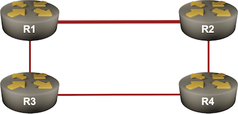

Configure IS-IS Fast Reroute Using TI-LFA
Fast Reroute redirects traffic around a link or node failure before a routing protocol recalculates the best paths (more details). It was traditionally implemented with traffic engineering tunnels and later with a much simpler Loop Free Alternate (LFA) that immediately uses the next best path when that path is guaranteed to be loop-free.
Unfortunately, LFA works only in a subset of well-designed network topologies. For example, in our lab topology, the R1-R2 link is a high-bandwidth link (with IS-IS cost 10), while the other links have lower bandwidth (and IS-IS cost 20). We thus cannot shift the R1→R2 traffic toward R3 after the R1-R2 link fails. As R3 uses R1 to get to R2, we’d create an immediate routing loop.

The only way to make LFA work in our lab topology is to have a mechanism that could push the R1→R2 traffic through R3 to R4 after the R1-R2 link failure without R3 inspecting the traffic. An MPLS LSP is commonly used to achieve that, and the global MPLS labels created by Segment Routing (SR-MPLS) are just what we need to implement Topology-independent LFA (TI-LFA).
In this lab exercise, you’ll explore how TI-LFA calculates the backup paths. Unfortunately, it’s hard to trigger the fast-failover behavior on virtual devices; interface shutdowns or IS-IS adjacency failures always trigger an immediate IS-IS response. We’ll have to rely on show commands to figure out the details.
Expert
This is an expert-level challenge lab – you are mostly on your own. Have fun!
Device Requirements
Use any device supported by the netlab IS-IS configuration modules for the routers in your lab. The device should also support SR-MPLS with IS-IS and TI-LFA.
Tip
You can use Arista cEOS containers in almost any environment. Arista EOS also has an excellent TI-LFA implementation with exquisite show commands.
Starting the Lab
You can start the lab on your own lab infrastructure or in GitHub Codespaces (more details):
- Change directory to
advanced/11-ti-lfa - Execute netlab up to start the lab if you want to configure Segment Routing yourself, or netlab up -s sr=yes if you’d like netlab to configure Segment Routing1
- Log into lab routers with netlab connect and verify their configuration.
Tip
Use Arista EOS containers with GitHub Codespaces. You won’t be able to load the kernel drivers needed by FRRouting or VyOS containers, and SR Linux containers need a license to run MPLS.
Existing Routing Protocol Configuration
When starting the lab, netlab configures IPv4 addresses and IS-IS routing. All routers will be level-2 routers using IS-IS point-to-point links for faster convergence.
If you start the lab with the -s sr=yes parameter, you’ll also get the prerequisite SR-MPLS configuration.
Configuration Sequence
- Configure SR-MPLS on all routers (more details)
- Reduce the IS-IS timers on all interfaces to the minimum your device supports to get faster failure detection2.
- Configure TI-LFA link protection (the network is not big enough for a meaningful node protection) using an IS-IS router configuration command similar to fast-reroute ti-lfa.
- Some platforms allow you to configure TI-LFA within the routing protocol configuration, while others require TI-LFA configuration on every interface. Cisco IOS requires both, plus LFA (isis fast-reroute protection) configured on all interfaces.
Validation
It’s tough to see what TI-LFA is doing. Most modern IS-IS implementations flood changes immediately and start SPF within milliseconds3. It’s therefore best to inspect what TI-LFA would do with the show commands.
For example, the show isis ti-lfa path command on Arista EOS displays the nodes the router would use to get to a specific destination in case of a link failure:
TI-LFA paths displayed by Arista EOS
r1#show isis ti-lfa path
TI-LFA paths for IPv4 address family
Topology ID: Level-2
Destination Algorithm Constraint Path
----------------- --------------- ----------------------- ----
r4 SPF exclude Ethernet2 r3
r2 SPF exclude Ethernet2 r4
r3 SPF exclude Ethernet1 r4
In our case, if the Ethernet2 (R1-R2) link fails, R1 would use R3 to reach R4, and R4 to reach R2. Use the show isis ti-lfa path detail command for even more details. Here’s how R1 would get to R2:
The details of the TI-LFA path R1 would use to get to R2 (displayed by Arista EOS)
r1#show isis ti-lfa path detail r2
TI-LFA paths for IPv4 address family
Topology ID: Level-2
Destination: r2
Path constraint: exclude Ethernet2
algorithm SPF (0)
Request sequence number: 1
Response sequence number: 1
Number of times path updated: 1
Last updated: 1:29:57 ago
ID: 0x1
Path:
r4 [PQ-node]
The crucial parts of the above printout are:
- The PQ-node (the first node that no longer uses R1 to get to R2)
- The TI-LFA tunnel index (ID)
Once we know the TI-LFA tunnel index, we can use the show isis ti-lfa tunnel command to inspect what labels R1 would use to redirect the traffic sent to R2:
TI-LFA tunnel (MPLS LSP) information displayed by Arista EOS
r1#show isis ti-lfa tunnel 1
Tunnel Index 1
via 172.16.0.2, 'Ethernet2'
label stack 3
backup via 10.1.0.2, 'Ethernet1'
label stack 900004 900002
The label stack effectively says “get this packet to R4, and then R4 should get it to R2”.
The only information Cisco IOS/XE gives you is the pretty cryptic tunnel information:
TI-LFA tunnel information displayed by Cisco IOS/XE
r1#show isis fast-reroute ti-lfa tunnel
Tag Gandalf:
Fast-Reroute TI-LFA Tunnels:
Tunnel Interface Next Hop End Point Label End Point Host
MP1 Et0/1 10.1.0.2 10.0.0.4 16004 r4
MP2 Et0/2 10.1.0.14 10.0.0.4 16004 r4
Fortunately, we can get a bit more from the show ip cef command:
Forwarding information for the R2 loopback displayed by R1 running Cisco IOS/XE
r1#show ip cef 10.0.0.2
10.0.0.2/32
nexthop 10.1.0.14 Ethernet0/2 label [explicit-null|16002](ptr:0x7F092623E850)-(local:16002)
repair: attached-nexthop 10.0.0.4 MPLS-SR-Tunnel1
The forwarding table contains the repair information, which shows that:
- R1 would use R4 as the next hop to get to R2
- R1 would use MPLS-SR-Tunnel1 to get to R4
- Using the previous printout, we can find the MPLS label attached to packets sent through that tunnel (16004)
Tip
Cisco IOS/XE has extensive TI-LFA debugging. Enable isis fast-reroute trigger and isis fast-reroute ti-lfa debugging on R1, shut down the R1-R2 link on R2, and enjoy the show 🍿
Reference Information
Lab Wiring
| Origin Device | Origin Port | Destination Device | Destination Port |
|---|---|---|---|
| r1 | Ethernet1 | r3 | Ethernet1 |
| r3 | Ethernet2 | r4 | Ethernet1 |
| r4 | Ethernet2 | r2 | Ethernet1 |
| r1 | Ethernet2 | r2 | Ethernet2 |
Note: The interface names depend on the devices you use in the lab. The printout was generated with lab devices running Arista EOS.
Lab Addressing
| Node/Interface | IPv4 Address | IPv6 Address | Description |
|---|---|---|---|
| r1 | 10.0.0.1/32 | Loopback | |
| Ethernet1 | 10.1.0.1/30 | r1 -> r3 | |
| Ethernet2 | 10.1.0.13/30 | r1 -> r2 | |
| r2 | 10.0.0.2/32 | Loopback | |
| Ethernet1 | 10.1.0.9/30 | r2 -> r4 | |
| Ethernet2 | 10.1.0.14/30 | r2 -> r1 | |
| r3 | 10.0.0.3/32 | Loopback | |
| Ethernet1 | 10.1.0.2/30 | r3 -> r1 | |
| Ethernet2 | 10.1.0.5/30 | r3 -> r4 | |
| r4 | 10.0.0.4/32 | Loopback | |
| Ethernet1 | 10.1.0.6/30 | r4 -> r3 | |
| Ethernet2 | 10.1.0.10/30 | r4 -> r2 |
-
In which case, your device has to be supported by the netlab Segment Routing configuration module. ↩
-
You could also use BFD, but it looks like Arista EOS interprets BFD session failure as a node failure. ↩
-
Unless the routers are overloaded with too many consecutive failures ↩